Photographs in. Numbered lots out.
Clearspace takes the photographs your staff already take (quickly, badly, one-handed) and gives back a catalogue: numbered lots, titles, written descriptions, condition, and a low/high estimate with the pages it actually read. Your job is to prune and adjust.
Free while it is in early access: no signup, no card, no limit on the lots. Works on a phone, in the house.
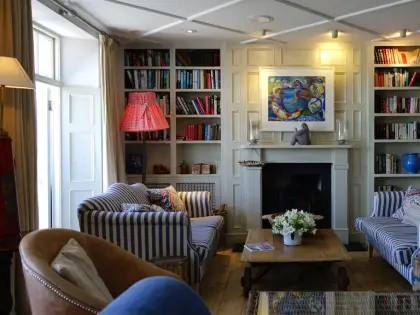
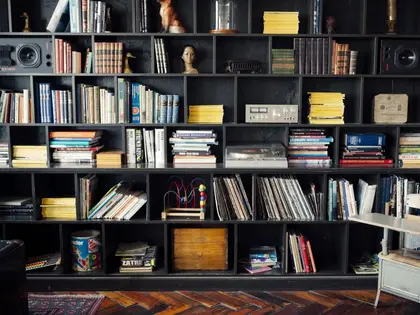
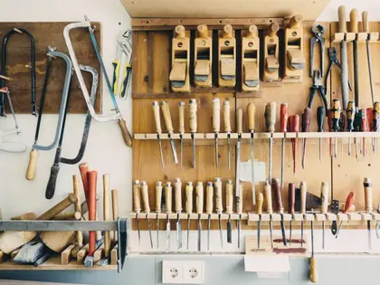
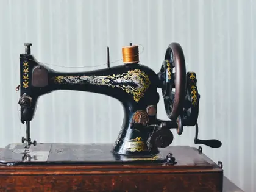
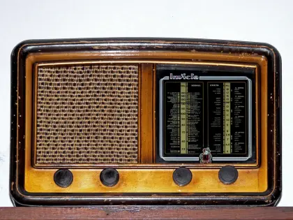
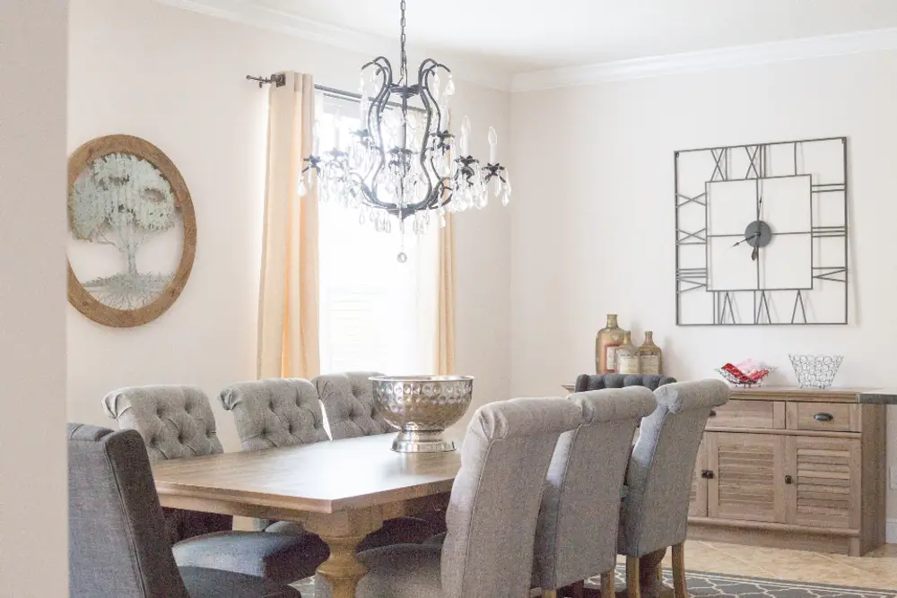
Out ↓ one of the lots it wrote
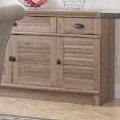
Lot 15
Weathered oak sideboard
Two panelled doors over two drawers, limed finish. Cut from the same photograph the table and chairs came out of.
Six photographs, catalogued.
Every row below is what the app hands back, and every thumbnail is the crop it cut for itself out of the photographs above. Including the one it refused to price.
Illustrative: sample lots, not a customer’s catalogue
-
12Lot
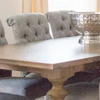
Oak trestle table and six tufted chairs
Sold as one lot. Light ringing to the table top, one chair with a mark to the outside back. Counted across two photographs of the room.
$400 – $650 Estimate
-
13Lot
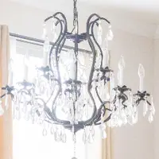
Iron and crystal chandelier
Aged iron frame hung with cut drops, no drops missing where the photographs show it. Wired, untested.
$220 – $340 Estimate
-
14Lot
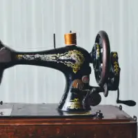
Hand-crank sewing machine, gilt decal
Decal wear to the arm, crank present and turning in the second photograph. Base and cover not with it.
$75 – $140 Estimate
-
15Lot
Weathered oak sideboard
Two panelled doors over two drawers, limed finish, one handle proud. Cut from the same photograph the table and chairs came out of.
$180 – $260 Estimate
-
–Held
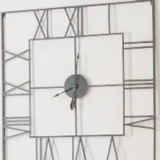
Open-frame wall clock, unmarked
No maker’s mark and no movement visible from the photographs. The research pass returned nothing comparable.
“Open-frame wall clock, unmarked” has no estimate yet, so it was left out. It is waiting for you in the app, not exported at zero.
Unsourced No estimate
Upload photographs. Take away the whole catalogue.
Built for HiBid and Auction Flex import. Every photograph is renamed for the lot it belongs to, so the sheet and the images can never drift apart.
- One zipclearspace-auction.zip, and nothing else to assemble
- lots.csvopens straight in Excel, or goes to the importer as it is
- The photographs, sortedrenamed 15_1.jpg, 15_2.jpg, so the lot is in the filename
- A page per lota link to each one, to check and adjust before you import
lots.csv header row
- lot
- title
- description
- condition
- estimate_low
- estimate_high
- reserve
- category
- quantity
- photos
clearspace-auction.zip
lots.csv 12_1.jpg 12_2.jpg 12_3.jpg 13_1.jpg 14_1.jpg 14_2.jpg …
Free, against what it replaces.
Cataloguing is the cost of goods, so the only comparison that matters is the salary it stands in for.
| Method | Per lot | 300 lots |
|---|---|---|
| A cataloguer at $20/hour, 10–20 minutes a lot | $3 – $7 | ~$1,500 |
| Clearspace, while it is in early access | Free | Free |
We will charge for this eventually, and we would rather work out what it is worth from auctioneers who have run a real sale through it. Until then it is free and uncapped. Put the output next to your own cataloguer’s and tell us what you would have paid.
Two things it will not do.
Invent an estimate
Estimates come from a research pass, and the pages it retrieved are
stored against the lot. When the research turns up nothing, the lot
says unsourced in that word, rather than showing a guess
in the same typeface as a fact.
Export a zero
A lot with no estimate is left out of the catalogue with a stated reason. It never leaves as a $0 row, because a $0 row in an import sheet reads as researched rather than missing.
Photograph your next lot and see what comes back.
No signup, no call, no card. Free while it is in early access.
Catalogue a room, free